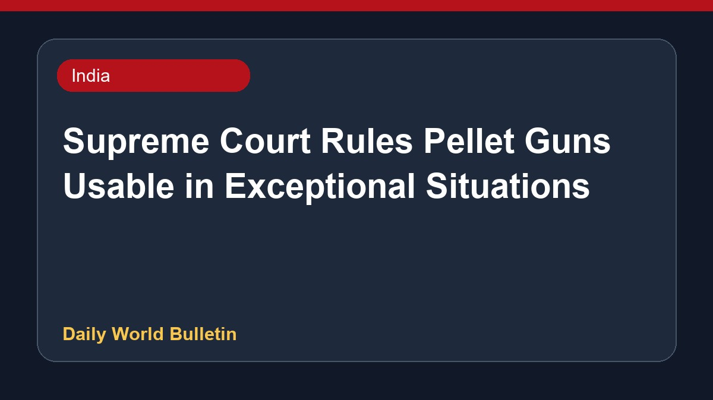

Supreme Court Rules Pellet Guns Usable in Exceptional Situations

The Supreme Court noted that pellet guns can be utilized during exceptional situations for crowd control, while hearing a plea seeking a ban on the weapon. The bench directed that the munition log of the Rapid Action Force from the Jantar Mantar protest must be preserved. Additionally, the court asked the Delhi government to guarantee proper treatment for injured protesters. Experts have warned that injuries caused by pellet guns can lead to permanent disability and irreversible damage even after medical intervention. Further details regarding the protocol are currently limited based on available reports.
Original source: India News Sources
Pellet guns: Supreme Court cites ‘exceptional situations’, says RAF munition log to be preserved - Telegraph India ↗
Pellet guns: Supreme Court cites ‘exceptional situations’, says RAF munition log to be preserved - Telegraph India ↗